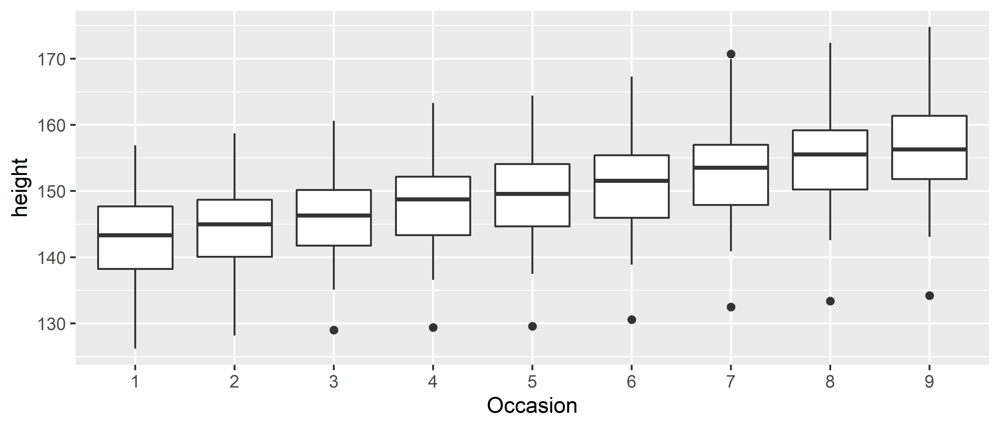
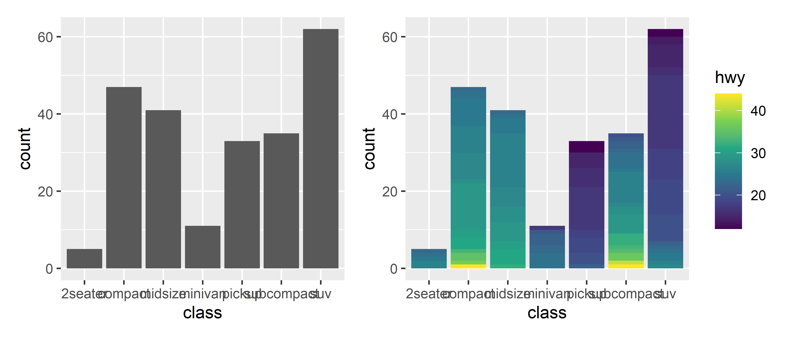

5.5 Geoms
5.5.1 Geoms individuais
Estes geoms são os fundamentais para a construção de plots, podem ser por sí um gráfico completo ou podem compor gráficos mais complexos.
Cada um destes geoms são bidimensionais e requerem estéticas de ambos x e y.
Todos eles entendem color e size como sendo parâmetros de mapeamento estético e os geoms que contém área interna como geom_bar e geom_polygon também entendem o parametro fill como mapeamento.
Estes geoms estarão listados abaixo:
geom_area(): cria um plot de área que é um gráfico de linha com a área abaixo da linha preenchida. Dados agrupados são dispostos no gráfico sobrepostos.geom_bar(stat = "identity"): gráfico de barras, é necessário especificar ostat = "identity"porque o padrão dogeom_baré um plot de frequência, tornando-o essencialmente um gráfico unidimensional. Com a estatística definida como identity no eixo x ficam os valores especificados pela estética x e no eixo y os valores especificados pela estética y.geom_line(): gráfico de linhas que conecta os pontos na direção da esquerda para a direita,geom_path()funciona de forma similar porém conecta os pontos na ordem que estão dispostos os dados. Os mapeamentos estéticos que são aceitos por estes geoms sãolinetype(oultypara abreviar), onde diferentes linhas serão geradas para cada grupo egroupque é a especificação de dados agrupados sem ter efeito na visualização dentro do gráfico.geom_point(): gera um gráfico de dispersão, aceita o mapeamento estéticoshapeque gera diferentes formatos de pontos dependendo do grupo.geom_text(): usado quando em vez de desenhar pontos nas coordenadas, desenhar texto, seja palavras ou letras.geom_polygon(): gera polígonos preenchidos onde cada vértice é uma linha no dataframe com as coordenadas de x e y em colunas separadas. É util para construção de mapas.geom_rect(),geom_tile()egeom_raster(): geram retângulos. Os parâmetros necessários parageom_rect()são as coordenadas máximas e mínimas das facesxeysendoxmin,xmax,ymineymax.geom_tile()é exatamente o mesmo porém comxeysendo as coordenadas do centro do retângulo e os parâmetroswidtheheightcomo a largura e altura respectivamente.geom_raster()é usado caso o tamanho de todos os retângulos seja o mesmo para aumentar a velocidade da criação do gráfico.
Cada um destes geoms será demonstrado nas figuras abaixo.
Observe as semelhanças e diferenças dos eixos x e y, alguns extrapolam os valores estabelecidos pelos dados e podem estender os limítes dos eixos.
df <- data.frame (
x <- c(1, 5, 9, 3.4),
y <- c(3, 6, 2, 5.4),
label <- c("a", "b", "c", "a")
)
p <- ggplot(
df, aes(x, y, label = label)) +
labs(x = NULL, y = NULL) + # esconde o nome dos eixos
theme(plot.title = element_text(size = 12)) # diminui tamanho do texto
p1 <- p + geom_point() + ggtitle("ponto")
p2 <- p + geom_text() + ggtitle("texto")
p3 <- p + geom_bar(stat = "identity") + ggtitle("barra")
p4 <- p + geom_tile() + ggtitle("raster")
p1 + p2 + p3 + p4
5.5.2 Geoms coletivos
Os geoms individuais criam objetos gráficos para cada observação ou linha da tabela contendo os dados, por exemplo, cada ponto de geom_point() representa uma linha de dados mas os geoms coletivos mostram várias observações, ou linhas, por elemento gráfico gerado.
Isso pode ser o resultado de um resumo estatístico como um boxplot ou resultado de como os dados devem ser dispostos.
Linhas e path estão no meio termo entre individuais e coletivos porque apesar de cada extremidade de uma linha ser apenas uma observação, o segmento é o conjunto de duas observações da tabela, ou seja, dois pontos.
Para controlar o comportamento devemos usar a estética group.
Por padrão, a estética group é mapeada para as variáveis discretas (ou categóricas) dos dados fornecidos à função ggplot() e na maioria dos casos o padrão é o suficiente para que os dados fiquem organizados no gráfico, porém quando não há variável discreta usada, é necessário que seja definido explicitamente um mapeamento agrupador dos dados.
Há três casos comuns onde o padrão não é suficiente.
Estes serão considerados abaixo.
Para os exemplos a seguir será usado o dataset Oxboys do pacote nlme, que contém a altura e idade de 26 homens registrado em nove ocasiões diferentes.
Grouped Data: height ~ age | Subject
Subject age height Occasion
1 1 -1.0000 140.5 1
2 1 -0.7479 143.4 2
3 1 -0.4630 144.8 3
4 1 -0.1643 147.1 4
5 1 -0.0027 147.7 5
6 1 0.2466 150.2 65.5.2.1 Grupos múltiplos, uma estética
Em várias situações é necessário separar os dados em grupos mas com a mesma estética. Em outras palavras: se deseja visualizar sujeitos distintos mas não é necessário identificá-los usando cores ou outros artifícios visuais. Isto é comum para estudos onde se quer ver a diferença entre vários sujeitos ao longo do tempo.
Para exemplificar, abaixo na esquerda um plot com múltiplos grupos e uma estética e à direita múltiplos grupos e múltiplas estéticas:
p1 <- ggplot(Oxboys, aes(age, height, group = Subject)) +
geom_point() +
geom_line() +
ggtitle("Uma estética")
p2 <- ggplot(Oxboys, aes(age, height, color = Subject)) +
geom_point() +
geom_line() +
ggtitle("Múltiplas estéticas")
p1 + p2Neste caso o padrão de agrupamento não funciona e se não for definido explicitamente ou se for definido incorretamente o plot terá uma aparência de “lâmina de serra”.

Se um group não for definido por uma única variável e sim por combinação de várias é possível usar a função interaction() para combiná-las, por exemplo: aes(interaction(identidade_escola, identidade_aluno)).
5.5.2.2 Grupos em camadas diferentes
Há vezes em que é necessário mostrar diferentes resumos estatísticos com agrupamentos específicos em camadas diferentes. Em uma camada pode mostrar valores não grupados enquanto que outra camada mostra um resumo estatístico agrupado.
Reaproveitando o exemplo acima, deseja-se criar uma linha que demonstre o aumento da altura dos sujeitos ao longo do tempo.
Abaixo na esquerda quando o mapeamento estético de group é feito no objeto principal, todas as camadas usam esta especificação para gerar a visualização, porém quando o mapeamento estético é especificado na camada específica, observa-se que apenas naquela camada o grupamento é feito.
p1 <- ggplot(Oxboys, aes(age, height, group = Subject)) +
geom_line() +
geom_smooth(method = "lm", se = FALSE) +
ggtitle("Grupo aplicado em \ntodas as camadas")
p2 <- ggplot(Oxboys, aes(age, height)) +
geom_line(aes(group = Subject)) +
geom_smooth(method = "lm", se = FALSE) +
ggtitle("Grupo aplicado na \ncamada line")
p1 + p2No lado direito, como o agrupamento foi feito na camada do geom_line() apenas estes dados estão agrupados enquanto que na camada geom_smooth() não foi feito nenhum agrupamento portanto a linha de regressão renderizada é em função de todos os dados.
5.5.2.3 Ignorando o grupamento padrão
Alguns gráficos tem uma escala discreta no eixo x, porém ainda se deseja criar uma camada que conecte os grupos separados por essa escala discreta.
Esta estratégia é usada para construção de interaction plots, profile plots e parallel coordinates plot.
Um exemplo é quando usamos o dataset Oxboys para observar a distribuição da altura entre todos os sujeitos ao longo das ocasiões onde a altura foi medida.

A variável discreta deste gráfico é Occasion porém não especificamos ela como sendo uma variável agrupadora e nem precisamos, porque o ggplot2 entende que variáveis discretas devem ser tratados como grupamentos por padrão.
Porém quando se deseja adicionar novas camadas com linhas de tendência ou outras visualizações este comportamento do ggplot2 pode não ser interessante por exemplo: quando tentamos adicionar linhas de tendência de aumento de altura as linhas geradas estão agrupadas pela variável Occasion resultando no gráfico abaixo:
ggplot(Oxboys, aes(Occasion, height)) +
geom_boxplot() +
geom_line(colour = "#6666FF", alpha = 0.5, size = 1.5)Para ignorar a variável agrupadora é necessario usar outra variável que agrupe os dados explícitamente como por exemplo abaixo:
5.5.2.4 Ajustando estética a elementos gráficos
Um importante fator de geoms coletivos é saber como que diferentes estéticas se comportam quando são mapeadas a um geom individual.
No ggplot2 linhas e caminhos operam sob um princípio de “primeiro valor”, onde cada segmento é definido por duas observações e o ggplot2 aplica o mesmo valor estético (por exemplo: cor) associado à primeira observação que compõe o segmento.
Isso significa que a estética usada na primeira observação é usada para desenhar o primeiro segmento e a estética da segunda observação será usada para desenhar o segundo segmento e assim em diante.
Abaixo, exemplo visual deste efeito:
df <- data.frame(x = 1:4, y = 1:4, colour = c(1, 3, 5, 7))
p1 <- ggplot(df, aes(x, y, colour = factor(colour))) +
geom_line(aes(group = 1), size = 2) +
geom_point(size = 5)
p2 <- ggplot(df, aes(x, y, colour = colour)) +
geom_line(aes(group = 1), size = 2) +
geom_point(size = 5)
p1 + p2Ao lado esquerdo, onde a cor é uma variável discreta (factor), o primeiro ponto e primeiro segmento são vermelhos, exemplificando o que foi dito anteriormente e ao lado direito, ocorre o mesmo mesmo se tendo uma variável contínua.
Nota-se que não há um efeito de degradê entre as cores mesmo para variáveis contínuas, porém é possível atingir esta transição de cores fazendo a interpolação dos dados manualmente.
# 100 pontos de interpolação
xgrid <- with(df, seq(min(x), max(x), length = 100))
# dataframe com dados interpolados
interp <- data.frame(
x = xgrid,
y = approx(df$x, df$y, xout = xgrid)$y,
colour = approx(df$x, df$colour, xout = xgrid)$y
)
ggplot(interp, aes(x, y, colour = colour)) +
geom_line(size = 2) +
geom_point(data = df, size = 5)
Neste gráfico são criados vários segmentos de reta usando os dados do dataframe interp e os pontos usados são os mesmos do dataframe df usado nos gráficos anteriores.
Outra limitação do ggplot2 é que linhas e caminhos devem tipo constante.
Não é possível renderizar uma linha com tipo de linha variável.
Outros geoms, como os coletivos são mais complicatos do que linhas e caminhos, e um elemento gráfico pode ser mapeado a várias observações.
Nestes casos não é muito óbvio como as observações deveriam ser combinadas.
Por exemplo: como colorir um polígono que tem pontos com cores diferentes em cada vértice?
Devido a esse tipo de ambíguidade o ggplot2 adota uma regra única: “as estéticas de elementos individuais são apenas usadas se são todas iguais”.
Se as estéticas dos elementos individuais são diferentes o ggplot2 usará um valor padrão.
Estes problemas são mais relevantes quando mapeando estéticas à variáveis contínuas.
Para variáveis discretas o comportamento padrão do ggplot2 é tratar a variável como parte da estética do grupo.
O efeito é que o geom coletivo seja dividido em pedaços menores.
Isto funciona muito bem para gráficos de barra e de área porque ao empilhar os pedaços individuais o formato fica igual aos dados não agrupados.
p1 <- ggplot(mpg, aes(class)) +
geom_bar()
p2 <- ggplot(mpg, aes(class, fill = drv)) +
geom_bar() +
theme(axis.text.x = element_text(angle = 90, hjust = 1))
p1 + p2Se as estética fill for mapeada a uma variável contínua, não funciona e o grupamento padrão continua sendo class (eixo x).
Para ter múltiplas cores por barra é necessário forçar o ggplot a ignorar o grupamento padrão através da definição explícita do grupamento.
Exemplo abaixo:
p1 <- ggplot(mpg, aes(class, fill = hwy)) +
geom_bar()
p2 <- ggplot(mpg, aes(class, fill = hwy, group = hwy)) +
geom_bar() +
scale_fill_viridis_c()
p1 + p2
Acima à direita a aparência de transição de cores na verdade é apenas um grande número de pequenos grupos de uma variável discreta que geram esse efeito.
5.5.3 Resumos estatísticos
5.5.4 Resolvendo overplotting
5.5.5 Anotações
Anotações